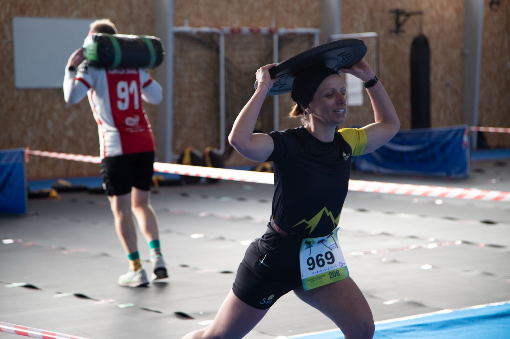
Fit Roz
La fitness race d'Armor Tri Passion : un enchaînement d'épreuves de force et d'endurance, encadré par des coachs, au complexe Yves Le Jannou. Retour sur une première édition réussie !
Une première édition pleine d'énergie
Le 28 février 2026, la toute première Fit Roz a réuni les passionnés de sport au complexe Yves Le Jannou à Perros-Guirec, pour une journée placée sous le signe de la force, de l'endurance et de la bonne humeur.
Encadrés par des coachs sportifs, les participants se sont mesurés sur plusieurs formats adaptés à chaque niveau — du plus accessible au plus engagé.
Merci à tous les participants, aux bénévoles, aux coachs et à nos partenaires : c'est grâce à vous que cette première édition fut une réussite. À l'année prochaine !
C'est quoi, une fitness race ?
Un format ludique et intense qui teste l'ensemble de tes qualités physiques, seul·e ou en équipe.
Force
Des ateliers qui sollicitent la puissance et le gainage : portés, tractions, déplacements de charges…
Endurance
Des séquences cardio pour tenir l'effort dans la durée et garder le rythme jusqu'au bout.
Pour tous les niveaux
Plusieurs formats permettent à chacun de participer à son rythme, encadré par des coachs.
Un format pour chaque niveau
De la découverte au défi.
Format S
La découverte, pour s'initier à la fitness race en douceur.
Format M
Le format intermédiaire, pour les sportifs réguliers.
Format L
Le défi, pour les plus aguerris en quête d'intensité.
Les résultats
Retrouvez les classements complets de la 1ʳᵉ édition.
Photos de l'édition 2026
Quelques instants de la journée — l'album complet est sur Google Photos.
Force
Port de charge sous le soleil
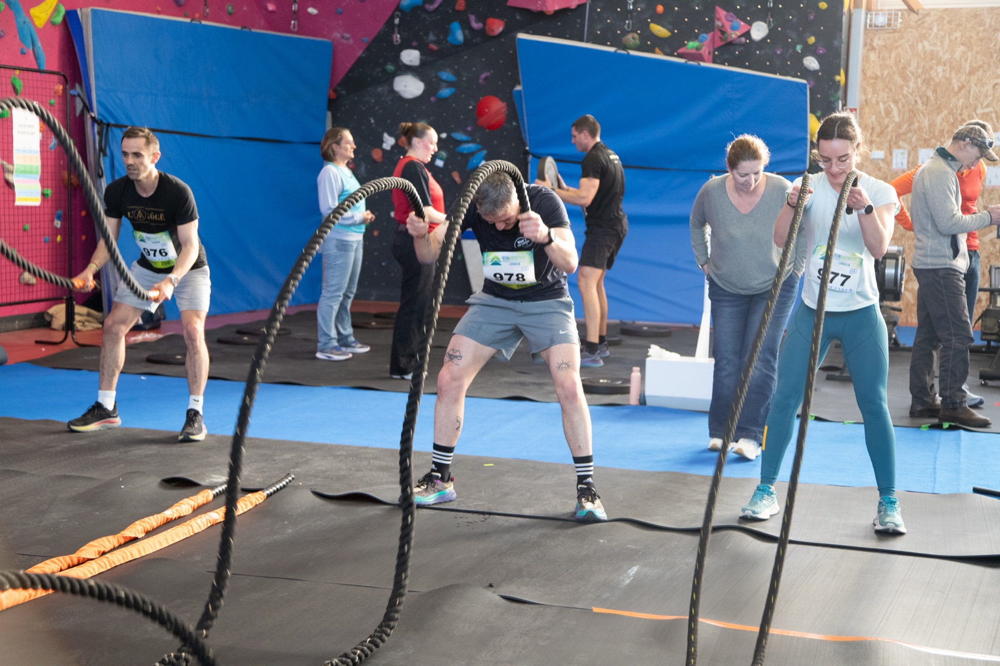
Battle ropes
Cardio et gainage
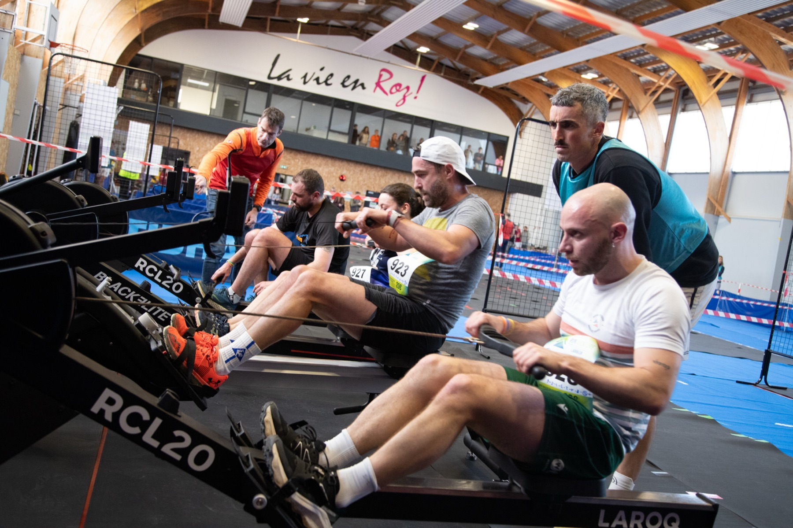
Rameur
La vie en Roz !
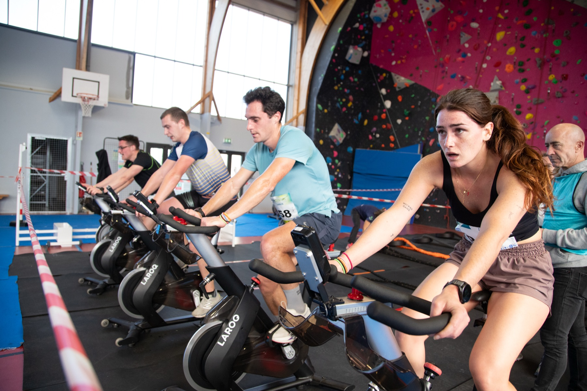
Vélo
Effort à fond
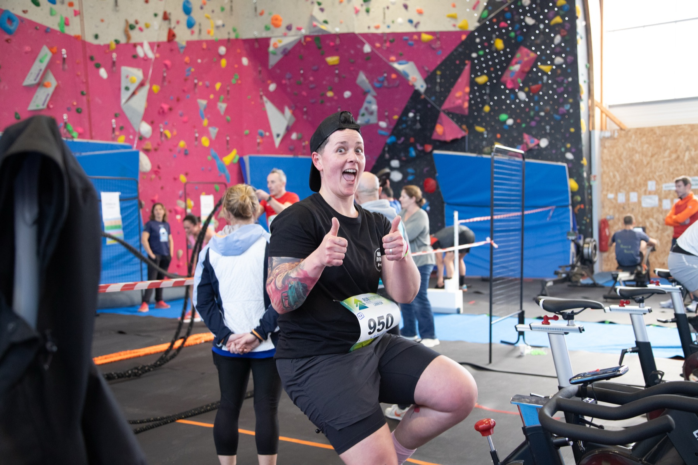
Bonne humeur
L'esprit Fit Roz
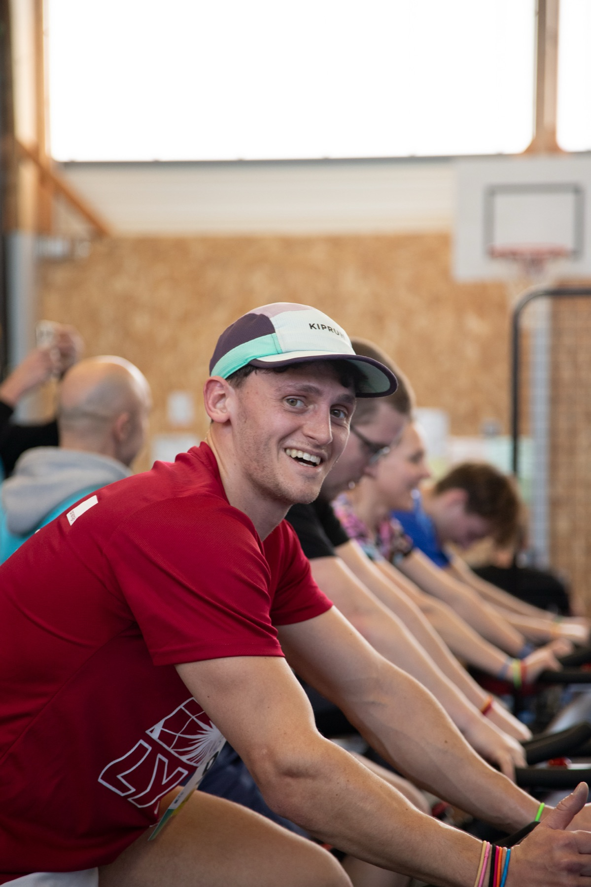
Le sourire
Malgré l'intensité
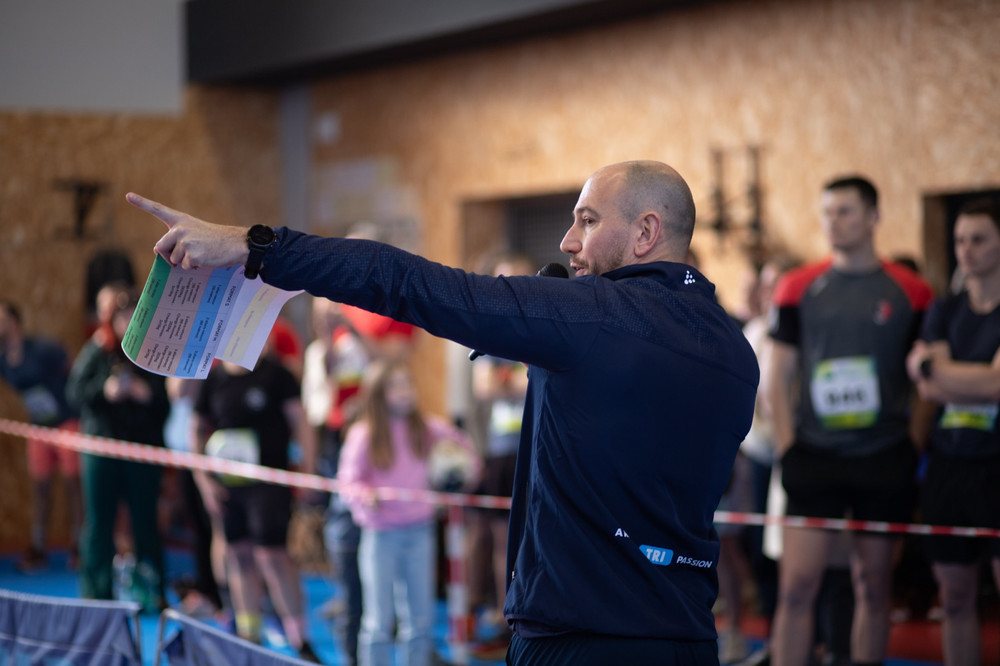
Briefing
Explication des formats
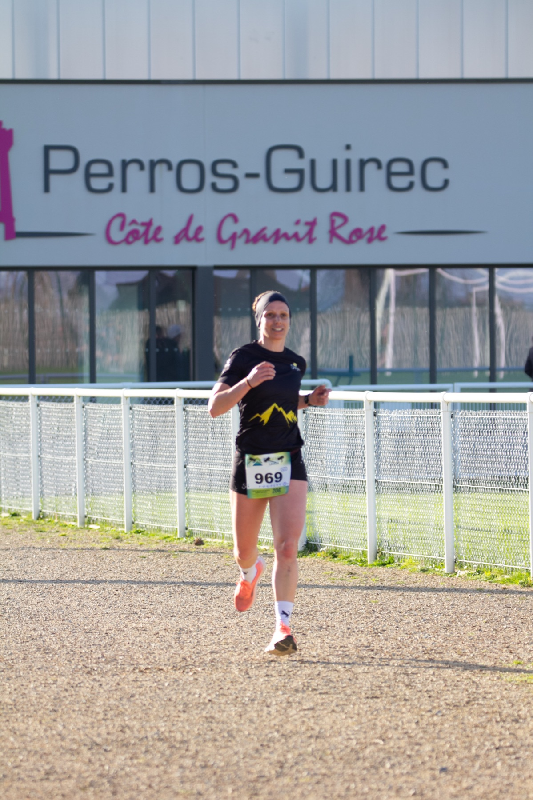
Section course
Perros-Guirec, Côte de Granit Rose
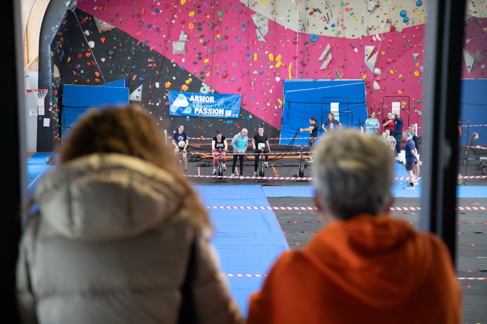
Le public
Des encouragements toute la journée
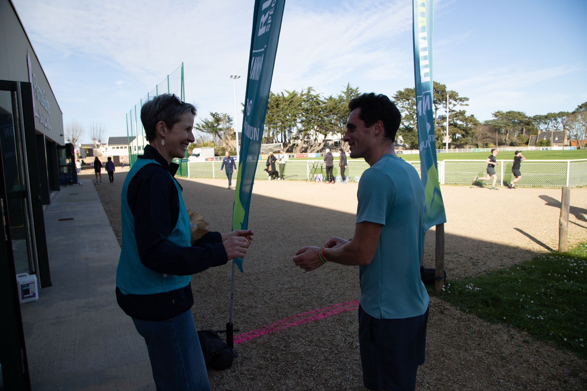
Convivialité
Avant le départ
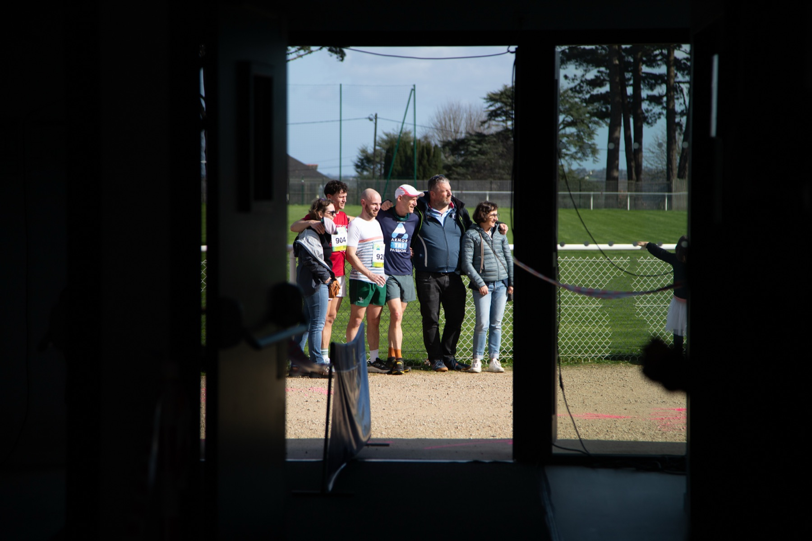
Esprit d'équipe
Tous ensemble
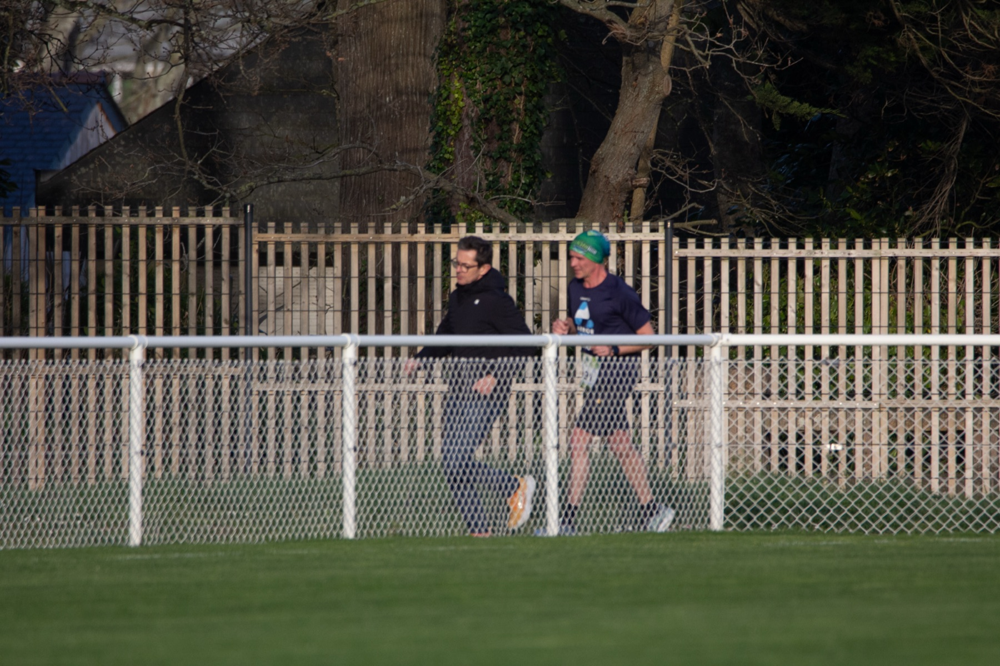
En course
Boucle extérieure
Nos partenaires
Un grand merci à nos partenaires qui ont rendu la Fit Roz possible.
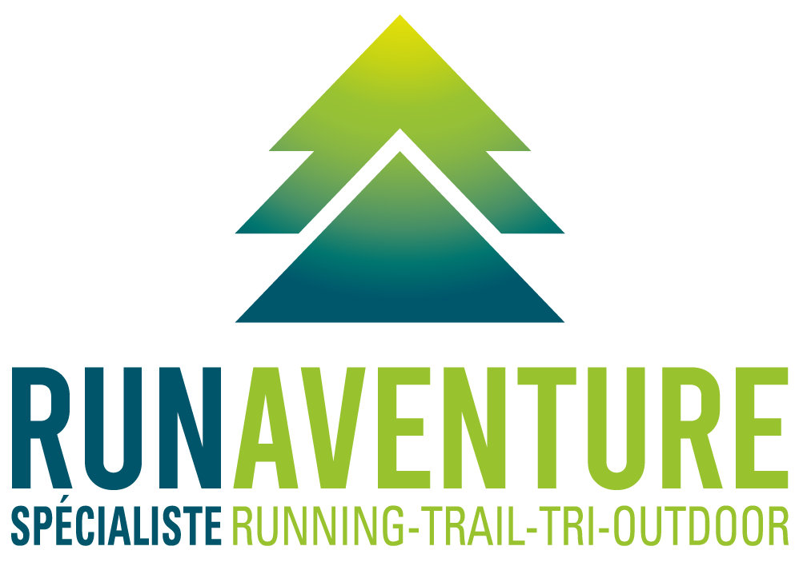
Run Aventure Lannion
Running & Nature
Expert trail et course nature sur le Trégor.
Carrefour City
Place de l'Église, Perros-Guirec
Partenaire ravitaillement de l'événement.
Rendez-vous en 2027 !
La Fit Roz revient l'année prochaine. Pour ne pas manquer l'ouverture des inscriptions, suivez-nous sur les réseaux ou contactez-nous.